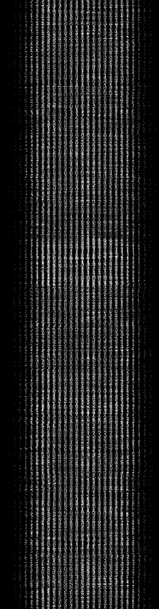

3 Training an MLP using MNIST handwritten digit data¶
In this notebook, you will be working with a very famous dataset known as the MNIST database of handwritten images (Modified National Institute of Standards and Technology database).
The complete dataset comprises a training set of 60,000 example images and a test set containing a further 10,000 examples. Each of the handwritten digit images have been ‘size-normalised’ to the same image size. In addition, each sample digit has been centred within the fixed-size image.
3.1 Extracting MNIST training images from an image data file¶
The MNIST handwritten image dataset has been widely used for benchmarking the performance of different machine-learning techniques, particularly in their early stages of development. It is also widely used for demonstration purposes, and you will meet several neural networks that were originally trained on the dataset in later notebooks.
In order to work with the dataset, we need to access it somehow. One common way of distributing the dataset is to encode all the handwritten digit image files, or batches or them, within another image file. In the example we will be working with, where each handwritten digit image is represented as a 28 × 28 pixel greyscale image, each row of the ‘distribution’ image file contains the 28 × 28 × 1 = 784 pixel values that represent a single 28 × 28 pixel handwritten digit image.
This is what one of the distribution data image files looks like:

At first glance, it doesn’t look like a lot of handwritten digits, does it?
So let’s investigate that large image file a little bit more.
This notebook includes quite a lot of fiddly bits of code to handle the MNIST images data. You are not expected to be able to write this sort of code, nor even to necessarily understand it. It is provided as a demonstration to illustrate the process steps and the sort of code required to actually make use of the data.
3.1.1 Importing the MNIST data image¶
When displayed as an image, the image is 784 pixels wide and 3000 pixels high, which we can see from the size of the image if we load it in to Python as an image object:
from PIL import Image
# Load in the image data file
img = Image.open('mnist_batch_0.png')
# If the image is a colour image, we can use various tools
# to convert it to a greyscale image
# .convert("L")
# Display the size of the image as (rows, columns)
print(f'The image size, given as (columns, rows), is {img.size}.')
This image itself contains 3000 lines of MNIST image data, corresponding to 3000 separate handwritten digit images. The 784 columns in each row represent a linearised version of the 28 × 28 = 784 values that represent the values of each pixel in each 28 × 28 pixel handwritten digit image.
We can preview what one of the rows looks like by running the following code cell:
# If we convert the image data to a one-dimensional array (i.e. a list of values)
# the first 784 elements will represent the contents of the first row
# That is, a linear representation of the first 28 x 28 pixel sized handwritten digit image
print(list(img.getdata())[:784])
We can inspect the image object to see how the data has been encoded:
img.getbands()
In this case, from the PIL package documentation, we see that mode L corresponds to a black-and-white image encoded with 8-bit pixels, defining each pixel as an integer with one of \(2^8\) values, which is to say an integer in the range 0...255, as can be seen from the preview of the first row of the image data.
3.1.2 Extracting individual digit images¶
What happens if we take one of these rows of data, cast it into its own 28 × 28 array, and convert it to an image file format?
import numpy as np
# Turn the image data into a multidimensional array
# of 3000 separate 28 x 28 arrays
images_array = np.array(img).reshape(3000, 28, 28)
# Get the third item (index value 2), that is, the third 28 x 28 image data array
image_array = images_array[2]
# And convert it to an image
image_image = Image.fromarray(image_array)
# Then display it
image_image
The sensor_data.image_from_array() function will also create the image for us using the same approach:
from nn_tools.sensor_data import image_from_array
image_from_array(image_array)
We can zoom in on an image to look at it in more detail using the nn_tools.sensor_data.zoom_img function:
from nn_tools.sensor_data import zoom_img
zoom_img(image_image)
We now see the handwritten digit not as a series of numbers but as an actual image.
For convenience, if we want to work with a list of images, we can generate one using the get_images_list_from_images_array() function:
from nn_tools.sensor_data import get_images_list_from_images_array
images_list = get_images_list_from_images_array(images_array)
3.1.3 Viewing an individual digit image as data¶
We can also view the image data in a pandas dataframe, trimming the dataframe to remove background coloured edging.
By default, the dataframe returning functions will preview the dataframe with colour highlight; pass the attribute show=False to disable this view.
from nn_tools.sensor_data import trim_image, df_from_image
trimmed_image = trim_image( df_from_image(image_image, show=False), background=0)
Record your own observations here about how the numeric values associated with each pixel correspond to the way they are rendered in the original image and in the false-colour dataframe heat map shown above.
To recap, the original mnist_batch_0.png file, which just happened to be an image file and could be viewed as such, was actually being used as a convenient way of transporting 3000 rows of data. In turn, each row of data could itself be transformed into a square data array that could then be rendered as a distinct handwritten digit image. The image itself, of course, is just numbers underneath.
3.1.4 So what?¶
At this point, you may be wondering what this has to do with training neural networks, let alone programming robots. What the example serves to demonstrate is that training a neural network on some test data may require a range of computer skills and knowledge to even get the data into a form where you can begin to make use of it.
Working with file formats and raw data representations often represents a large part of the workload associated with any data analysis, modelling, or classification task, and often requires significant computational data-handling skills. Whilst we don’t expect you to learn how to perform these data-wrangling tasks yourself as part of this module, you should be aware that when you see recipes saying things like ‘just load in the dataset…’, there may be quite a lot of work associated with that word, just.
To learn more about working with data along the whole data pipeline – from data acquisition, to data cleaning, management, storage, analysis and presentation – consider taking the Open University module TM351 Data management and analysis.
3.2 Preparing the MNIST image training data¶
Although MLP classifiers can struggle with large images, the 28 × 28 pixel image size used for the MNIST images is not too large to train an MLP on, although it does require an input layer containing 784 neurons, one for each pixel.
To train the MLP on the linearised pixel values, we need to present labelled images that identify the category (that is, the digit) that each image represents.
The training labels are provided in a separate file which we can load in as follows:
import json
# The labels.txt file contains 3000 digit labels in the same order as the image data file
with open('labels.txt', 'r') as f:
labels = json.load(f)
# Show the length of the label array and the value of the first 10 digits
len(labels), labels[:10]
3.2.1 Grabbing random test images and their labels¶
The following cell imports a helper function to retrieve a random image from the images array, or the image corresponding to the provided index value.
Run the following cell repeatedly to try the get_random_image() function out:
from nn_tools.sensor_data import get_random_image
(test_image, test_label) = get_random_image(images_array, labels, show=True)
Rerun the previous cell several times to preview the display of different randomly selected images.
Record any observations or notes here that you would like to make about the images you observed.
To access a particular image, such as the first image in the dataset, pass its index:
(test_image, test_label) = get_random_image(images_array, labels, show=True, index=0)
3.3 Training a simple MLP on the MNIST image data¶
We can now train a simple MLP from the MNIST data and the training labels.
The scikit-learn MLPClassifier can automatically identify from a training set the number of nodes required for the input and output layers, so all we need to provide is the hidden layer(s) definition.
One of the intuitions for making sense of how neural networks work is to consider each thing to be recognised as being represented by a vector. In the case of the MNIST images, this is a 784-dimensional vector (which is rather more dimensions than the three-dimensional world we are familiar with!).
The classification task is then one of trying to classify things as belonging to the same group if they are pointing in roughly the same direction in this high-dimensional space.
The point of normalising the lengths of the vectors is because we are most interested in the direction they are pointing, not how far along the path they are.
3.3.1 Training the MLP¶
For starters, let’s see if we can train the network to classify the images using a single layer containing 40 hidden neurons:
from sklearn.neural_network import MLPClassifier
hidden_layer_sizes = (40)
max_iterations = 40
MLP = MLPClassifier(hidden_layer_sizes=hidden_layer_sizes, max_iter=max_iterations,
verbose=True,
# For reproducibility, set the inital random state to a specified seed value
#random_state=1,
)
We need to present the data as a list (that is, as a one-dimensional linear array) of lists (or vectors). Each vector contains 784 values, corresponding to the 28 × 28 pixels in each image.
To simplify training, we also normalise the length of each of these image vectors so the length of each vector is 1.
The images_list contains the image data as a list of images. We can retrieve the pixel data for an image as a list (list(image.getdata())), and then normalise the image vectors using the scikit-learn normalize function:
from sklearn.preprocessing import normalize
images_data = []
# For each image in the images_list
for image in images_list:
# Get the data as a list
# and append it to the images_data list
images_data.append(list(image.getdata()))
# The axis=1 argument normalises each individual image vector
normalised_images_data = normalize(images_data, axis=1)
# This functionality also made available as:
# nn_tools.sensor_data.get_images_features(images_list, normalise=True)
When training the network, we can use the first 2900 images as a training set and hold back 100 images to use as a ‘previously unseen’ image test set.
test_limit = 100
train_limit = len(normalised_images_data) - test_limit
# Train the MLP on a subset of the images
MLP.fit(normalised_images_data[:train_limit], labels[:train_limit])
Review the shape of the trained network and the loss function:
from nn_tools.network_views import network_structure, show_loss
network_structure(MLP)
show_loss(MLP)
Record your own observations about the shape of the loss curve. Does it plateau towards a flat line?
If the line hasn’t flattened off, but is still falling steeply, consider changing the number of hidden layers, and/or the maximum number of training iterations and retraining the network. Can you flatten the loss curve?
Take care not to push the network too far. If you keep on training it, it will get better and better at classifying the images you present it with, but its performance against previously unseen images is likely to degrade as the network overfits itself to the training data.
3.3.2 Testing the performance of the network¶
With the network trained, we can check how well it performs on the images in the training set using the classification report and confusion matrix:
from sklearn.metrics import classification_report
from sklearn.metrics import confusion_matrix
training_data = normalised_images_data[:train_limit]
training_labels = labels[:train_limit]
predictions = MLP.predict(training_data)
print("Classification report:\n",
classification_report(training_labels, predictions))
print("\n\nConfusion matrix:\n",
confusion_matrix(training_labels, predictions))
Recall that the precision and recall scores range from 0 (worst) to 1 (best), with the precision relating the number of true positives and false positives, and the recall score relating the number of true positives and false negatives; the f1 score attempts to combine the sense of precision and recall as a weighted average of those two scores, with a value of 1 representing the best performance and 0 the worst.
If the precision, recall and f1-score values are close to 1, that’s a good sign; and if large values predominate on the diagonal of the confusion matrix, that shows that most digits are identified correctly.
Record your own observations about the performance of the network. Does it appear to struggle with any particular images?
If the network is performing really badly, consider changing the number of hidden layers, and/or the maximum number of training iterations and then retrain the network.
3.3.3 Testing a single random image¶
We can use the nn_tools.network_views.predict_and_report_from_image() function in the following example to test against a randomly selected image and its classification label.
Omitting the test label will just return the prediction. A zoomed view of the sample image can be seen by setting zoomview=True when calling the function:
from nn_tools.network_views import predict_and_report_from_image
# Get a test image
(test_image, test_label) = get_random_image(images_list, labels)
# And test the trained MLP against it
predict_and_report_from_image(MLP, test_image, test_label)
3.3.4 Probing the MLP’s confidence in its predictions¶
Even though it may be hard for us to see from the network’s weights exactly what is going on, the network appears to be doing its job in terms of classifying digits, at least when it comes to the sample images.
By passing the confidence=True parameter to the predict_and_report_from_image() function, we can display a bar chart showing the confidence of the prediction for each class:
predict_and_report_from_image(MLP, test_image, confidence=True)
Generate and test several more random image selection predictions and then record you own observations here about how confident the network was in its prediction.
3.3.5 Testing the MLP against multiple images¶
As well as testing the network against data it has already seen, we can also test it against images we held back and that it hasn’t seen before. Once again, we can review the effectiveness of the network by means of the classification report and confusion matrix, this time handled more conveniently using the test_and_report_image_data() function from nn_tools.network_views:
from nn_tools.network_views import test_and_report_image_data
testing_data = normalised_images_data[train_limit:]
testing_labels = labels[train_limit:]
test_and_report_image_data(MLP, testing_data, testing_labels )
Record your own observations here about the classification report and the confusion matrix. Does the network appear to be confused by any images in particular?
We can summarise the performance using the MLP .score() function:
print("Training set score: {}".format(MLP.score(training_data, training_labels)))
print("Test set score: {}".format(MLP.score(testing_data, testing_labels)))
You will have an opportunity to explore other MLP configurations and training regimes later in this notebook to see if you can improve the performance of the network.
3.3.6 Testing the MLP using multiple random images¶
The nn_tools.network_views.test_and_report_random_images() can be used to test the trained MLP against a specified number of samples, with samples picked by a specified function, such as our get_random_image() function:
from nn_tools.network_views import test_and_report_random_images
test_and_report_random_images(MLP,
get_random_image, images_list, labels,
num_samples=100)
Record your own observations here about how well the network performs. Does it appear to be confused by any images in particular?
3.4 Rapidly retraining the MLP¶
In defining the MLP originally, we specified a maximum number of training iterations, as well as the verbose reporting option. By default, a progress bar display is not available when training the MLP, but we can create one by defining a minimal MLP, training it on a single iteration to define the classes, and then training it across multiple iterations using the .partial_fit() method, which applies additional training iterations to the MLP.
This approach has been implemented as the function network_views.progress_tracked_training():
from nn_tools.network_views import quick_progress_tracked_training
from nn_tools.sensor_data import get_images_features
# Specify some parameters
hidden_layer_sizes = (40)
max_iterations = 50
# Identify training images and labels
training_images = images_list[:train_limit][:train_limit]
training_labels = labels[:train_limit]
# Create a new MLP
MLP2 = quick_progress_tracked_training(training_images, training_labels,
hidden_layer_sizes=hidden_layer_sizes,
max_iterations=40, report=False)
# Top up an existing MLP
MLP2 = quick_progress_tracked_training(training_images, training_labels,
MLP=MLP2,
max_iterations=40, report=True)
Test and report on this trained network:
test_and_report_random_images(MLP2,
get_random_image, images_list, labels,
num_samples=100)
We can also create a simple end-user application to help us train the network in a more interactive fashion:
from ipywidgets import interact_manual
MLP3=None
@interact_manual(iterations=(100, 2000, 100),
h1=(0, 10, 1), h2=(0, 10, 1))
def trainer(iterations=100, h1=6, h2=6, updater=False):
global MLP3
MLP3 = quick_progress_tracked_training(training_images, training_labels,
hidden_layer_sizes=hidden_layer_sizes,
max_iterations=40,
MLP = MLP3 if updater else None,
loss=True, # show loss function
structure=True # show network params
)
Feel free to experiment with training the network using different setups. But don’t spend too much time playing!
Record any notes and observations you care to make regarding any experimentation you carried out with respect to the training and testing of the MLP.
3.7 Saving the MLP¶
We can persist the model by saving it to a file using a variant of the of Python pickle module, as described in the scikit-learn documentation:
from joblib import dump
dump(MLP, 'mlp_mnist_28x28.joblib')
This is particularly important if we want to share the trained model, not least in situations where it may take some considerable time to train the model.
We can load it back in again in the following way:
from joblib import load
MLP = load('mlp_mnist_28x28.joblib')
# Test that it still works...
predict_and_report_from_image(MLP, test_image, test_label)
3.8 Optional activity – Visualising the trained MLP weights¶
This is an experimental optional activity. It is still quite brittle. Click the arrow in the sidebar, or run this cell, to view the activity.
In passing, we can plot the 28 × 28 incoming weights into the hidden layer neurons in a 28 × 28 grid to see how they filter the input values. The code is rather fiddly, so don’t try to make too much sense of it. You will notice that to human eyes at least, none of the input neurons has weights that apparently encode directly for a particular handwritten integer (1, 2, 3 etc.).
Note that this only works at the moment for a single-layer network with 40 hidden nodes.
from nn_tools.network_views import preview_weights
preview_weights(MLP)
3.9 Summary¶
In this notebook, we have explored the MNIST handwritten digit image dataset and trained a multi-layer perceptron against part of it. The MLP takes as input the 28 × 28 original pixel values used to represent each handwritten digit image and one of 10 predicted classification outputs. To validate the trained network, it was tested against some test images that we held back from the original training set.
But how robust is our network when it comes to classifying images that were perhaps not in the original dataset at all?
For example, will the network still recognise an image if we slightly recentre it in the original image frame?
The next two notebooks contain optional study material. The first provides you with an opportunity to see just how well the network is able to recognise images that may look much the same to us as the original images, but actually have quite distinct features from the original training data. The second develops further intuitions about what it actually is that we are providing as input data to a neural network.
The required material continues with a look ‘inside the mind’ of a neural network, exploring how we can start to visualise the network structure and behaviour to get a better understanding of what it is actually doing.